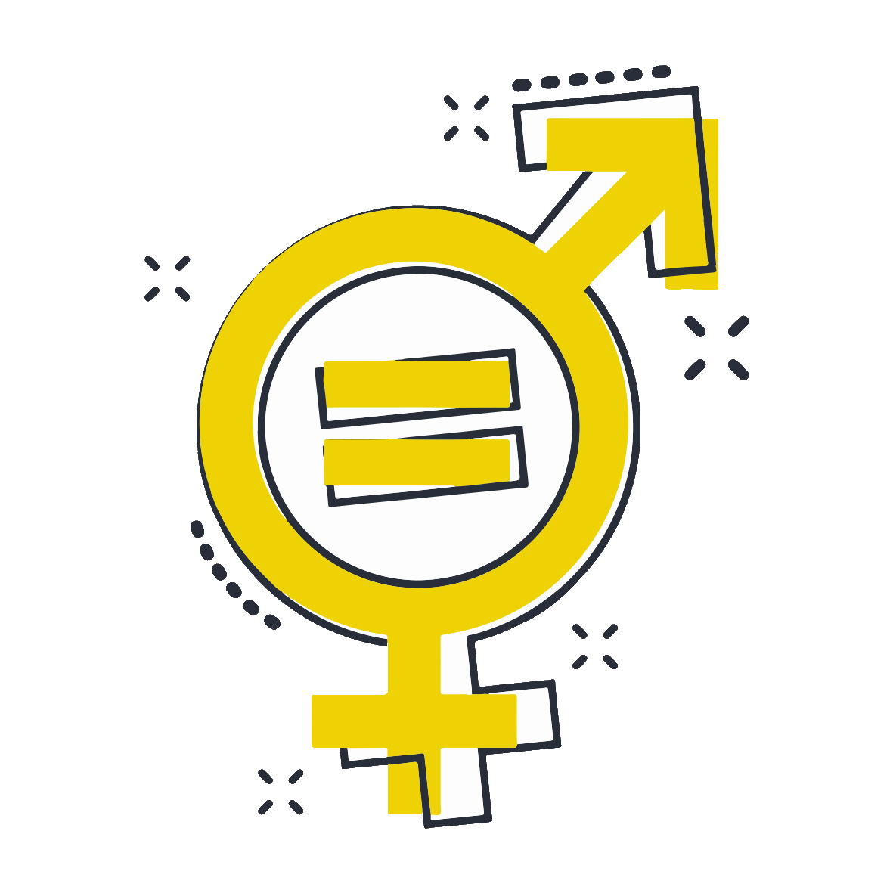

Ce programme que nous avons mis en place a pour but de lutter contre les inégalités des Français et Françaises subies au cours de leurs vies (racisme, salaire, violence conjugale, …). Il s’agit de la première fois que de telles actions sont instaurées en France avec la création d’un nouveau ministère promouvant l’égalité entre les hommes et les femmes, la diversité et l’égalité des chances. En effet, Emmanuel MACRON a placé l’égalité des chances de la population au cœur de son quinquennat. Le parti centriste a su répondre aux demandes nouvelles de la société française.
Le parti centriste a déjà fait beaucoup pour le pays avec Marlène SHIAPPA qui a mis en place de nouvelles mesures consistant à réduire les inégalités présentes encore au sein de notre pays :
-> Loi permettant de limiter les violences sexistes et sexuelles (harcèlement de rue)
-> Grenelle des violences conjugales (près de 40 mesures ont été prises pour contrer ces violences conjugales). C’est la 1 ère fois qu’un gouvernement prend autant à cœur ce fléau qui fait partie de nos sociétés.
-> Précarité menstruelle.
Elisabeth MORENO qui est entré dans le gouvernement de Castex depuis juillet 2020 a suivi notre belle lancée en faisant entendre sa voix sur des fléaux de notre société. Elle participe personnellement à ce combat en réussissant à demander une augmentation de près de 40 pourcents de la part de son ministère. Mme MORENO est particulièrement engagée dans la lutte de l’égalité homme-femme. Ayant été elle-même au cœur d’une entreprise, elle connaît les problématiques présentes. C’est pourquoi elle revendique un quota de femme dans le milieu du travail. Son engagement se continue dans la lutte contre le racisme. Ci-dessous, des extraits de son dévouement face à l’égalité des chances :
“La lutte contre le racisme et l'antisémitisme doit nous rassembler.”
“Face au déferlement de haine auquel sont confrontées actuellement les personnes asiatiques dans notre pays, j'ai réuni ce matin les principales associations et des parlementaires engagés sur ce sujet. La xénophobie n'a pas sa place dans notre République.”
“Assassinée parce que juive. N'oublions jamais le visage de Mireille KNOLL, survivante de la Shoah, victime de l'antisémitisme et de la barbarie. La lutte contre l'antisémitisme nous concerne tous.”
Malgré nos actions contre le sexisme toujours présent en France, les femmes restent sous-représentées à tous les niveaux du pouvoir politique ; et, 20 % des femmes et des filles âgées de 15 à 49 ans ont subi des violences physiques ou sexuelles de la part d’un partenaire intime sur une période de 12 mois. C’est pourquoi dans le prochain mandat nous souhaitons aller plus loin et faire évoluer les mentalités dès le plus jeune âge pour éviter que cela perdure par la suite.
-> éduquer les hommes en donnant des cours essentiellement sur le sexisme, la culture du viol et l’impact sur la femme. Mais aussi, sensibiliser les enfants dès le plus jeune âge sur la discrimination pour faire évoluer la culture et les mentalités. Cela passera par une éducation obligatoire au Collège et au lycée.
